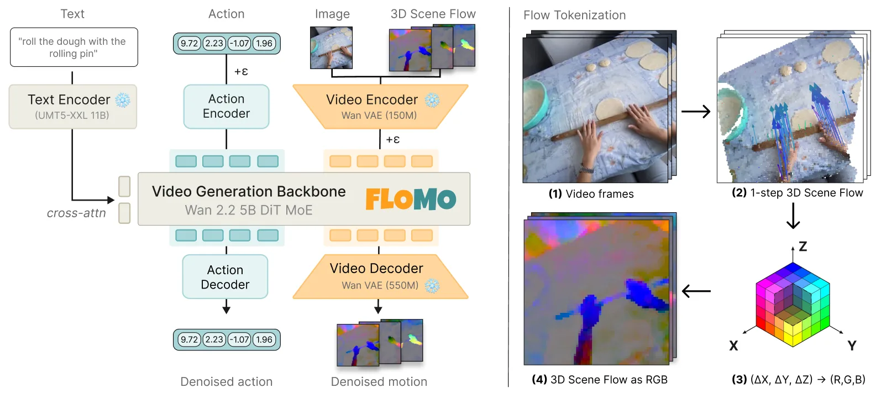

FloMo：把 3D 场景流当作世界动作模型的中间表示
FloMo: 3D Scene Flow as a World Action Model Intermediate for Learning from Human Video
FloMo 以 Wan 2.2 5B DiT 为骨干，用 flow matching 同时生成“场景流 token”和“动作 token”。关键工程是把每个跟踪点的三维位移在规范坐标系里累积成速度场，渲染成 RGB 视频，再用预训练视频 VAE 编码——于是运动与视频共享同一潜空间，不需要新 tokenizer，只需微调骨干。训练混合 81 小时 EgoVerse 人类第一视角视频（从 1362 小时里筛多样性）、10 小时 MolmoAct2 双臂 YAM 遥操作、3.7 小时内部任务演示与 0.4 小时无指令玩耍数据。真机分布内平均成功率 91%（视频+动作变体 51%、纯视频 40%）；分布外平均 60% 成功率 / 68% 任务进度（AMPLIFY 20%/23%，DreamZero 20%/30%）；RoboTwin 平均 63.6%（π0.5 44.8%、FAST-WAM 41.0%、BC 19.2%）。去掉人类视频后分布外成功率从 60% 掉到 7%。
in-distribution success
OOD success / progress
RoboTwin average success
OOD without human video
作者、单位与技术谱系 · Research context
作者与单位
研究脉络
- Wan 2.2（视频生成基座）方法基座关系：提供 5B DiT 视频生成骨干与预训练 VAE 潜空间，FloMo 只做微调不改 tokenizer。[论文 §I 与 §III-C]
- AMPLIFY（2D 点轨迹中间表示）对比基线关系：同样用“中间运动表示”连接视频与动作，但用稀疏 2D 点轨迹；本文用稠密 3D 场景流并声称分布外更好。[论文 §IV-A 与表 I]
- DreamZero（视频世界模型）对比基线关系：联合预测未来视频与动作，是“像素目标”路线的代表；本文用它证明视频目标在分布外更差。[论文 §IV-A 与表 I]
合作网络
- Georgia Tech 与项目页Animesh Garg → Georgia Institute of Technology关系：署名单位与项目页归属[FloMo 项目页]
- FloMo 与 MolmoAct2 平台FloMo → MolmoAct2-BimanualYAM关系：数据与硬件平台依赖[论文 §IV-A]
- FloMo 与 EgoVerse 数据FloMo → EgoVerse关系：训练数据依赖[论文 §IV-A]
作者与单位来自论文首页与项目页；谱系关系依据论文自述；未发现公开材料说明作者之间的指导关系。
方法本质拆解 · What actually changed
微调 5B 视频生成骨干
从 Wan 2.2 5B DiT 初始化，用 flow matching 目标同时训练运动 token 与动作 token；人类视频只给视频与场景流监督，机器人遥操作额外给动作监督。不是从头训练，也不是冻结骨干只训动作头——运动预测能力需要骨干权重参与更新，这正是“视频先验通过权重迁移”的论点。
约束来自表示与数据配比
场景流被定义在相机运动无关的规范坐标系里，等于强制运动目标不含相机位移；渲染成 RGB 后复用视频 VAE，等于强制运动与视频共享同一潜空间。数据侧用 81 小时人类视频 + 10 小时机器人遥操作 + 少量内部数据的配比控制先验来源，没有额外的物理约束或动作一致性损失。
联合采样运动与动作
推理时给定当前图像与语言指令，模型用 flow matching 迭代去噪，同时得到运动 token 与动作 token；动作直接由动作头输出，不需要先渲染运动再反解。没有测试时优化，也没有用真实执行结果回灌校正，因此运动与动作不一致时无法在推理阶段自动发现。
用低熵目标把视频先验挤进动作
视频预训练提供的是“世界如何运动”的先验，但像素目标把外观也编码进去；把目标换成三维运动，等于给骨干一个信息瓶颈，只保留与动作相关的几何变化。因果链是：目标更低熵 → 动作头更容易解码 → 同样数据下分布外更稳。它没有做的是显式约束运动与动作一致，也没有证明在非桌面、非刚体场景下仍然成立。
输入 = 当前图像 + 语言指令 + 预训练视频骨干；改变的位置 = 预测目标从像素换成渲染成 RGB 的 3D 场景流；约束/动作 = 复用视频 VAE 潜空间 + 人类视频/机器人数据联合训练；直接效果 = 分布内 91%、分布外 60%，远超视频预测变体。

结论与问题Conclusion & Motivation
核心结论
世界动作模型不该预测像素，而该预测三维运动：把场景流渲染成 RGB、复用视频 VAE 的潜空间，预训练视频骨干几乎不用改结构就能学会预测运动与动作。真机分布内平均成功率 91%，而匹配的视频+动作变体只有 51%、纯视频 40%；分布外平均 60% 成功率、68% 任务进度，AMPLIFY 为 20%/23%、DreamZero 为 20%/30%；RoboTwin 五个任务平均 63.6%，π0.5 44.8%、FAST-WAM 41.0%、行为克隆 19.2%。最有说服力的是消融：去掉 81 小时人类视频后，分布外成功率从 60% 掉到 7%，说明泛化主要来自人类视频里的运动先验，而不是机器人遥操作数据量。
动机与问题
视频比它蕴含的动作熵高得多：同一段运动可以出现在不同纹理、光照、材质与背景下，预测像素会把容量花在动作根本用不到的外观上。已有世界动作模型无论耦合松紧，预测目标都是未来像素；作者要问的是“哪个预测目标能让视频预训练最直接地迁移到动作”。他们的答案是三维运动：给定当前观测，产生未来状态的动作取决于场景如何变换，而不取决于它长什么样；因此预测运动是一个更低熵、且自带外观不变性的目标。
方法Method
方法总览
表示层：把每个被跟踪场景点在规范坐标系里的三维位移累积成速度场，再渲染成 RGB 视频，用预训练视频 VAE 编码成 token，于是运动 token 与视频 token 处在同一潜空间，不需要训练新的运动 tokenizer。模型层：以 Wan 2.2 5B DiT 为骨干，用 flow matching 同时去噪运动 token 与动作 token，动作头直接读运动潜变量。训练层：人类视频只提供视频与场景流监督，机器人遥操作额外提供动作监督，二者混合训练；推理时给定图像与语言指令，联合采样运动与动作。
关键技术细节
运动表示是“相机运动无关”的：场景流在规范坐标系里表达，渲染成 RGB 后每个像素通道编码三维位移分量，因此视频 VAE 看到的是一张“运动图”，而不是原场景。训练数据配比写得很具体：EgoVerse 81 小时（从 1362 小时语料按多样性筛选）、MolmoAct2-BimanualYAM 10 小时（从 700 小时筛选）、内部任务演示 3.7 小时、无指令玩耍 0.4 小时，另加 0.7 小时与机器人任务重叠的无动作人类演示。真机评测每个任务 15 次 rollout（分布内）或 10 次（分布外），RoboTwin 每任务 100 个 Easy episode，单任务微调 5000 步、批大小 256。
实验Experiments
实验设置
评测分三块：分布内真机任务（Oven、Toolbox、Corn，均需接触丰富的精细操作，双臂 YAM 平台）、分布外真机任务（Close Cabinet 未见运动基元、Pull String 未见任务、Highlighter 未见物体）、以及 RoboTwin 仿真五任务（Pick Dual Bottles、Stack Bowls、Open Laptop、Hanging Mug、Handover Microphone）。指标是成功率 SR 与任务进度 TP；对照包括匹配架构的 VMA（视频+运动+动作）、VA（视频+动作）、MA（运动+动作），以及 AMPLIFY（2D 点轨迹中间表示）、DreamZero（视频世界模型）、π0.5、FAST-WAM、行为克隆。所有方法共用同一数据与评测协议。
实验数字与比较
分布内（图 2）：FloMo 平均 91%，VMA 51%、VA 40%；Toolbox 上 87% 对两个视频变体各 13%，差 74 个百分点。分布外（表 I，10 次/条件）：FloMo 聚合 18/30 成功（60%）、TP 68%；AMPLIFY 6/30（20%）、TP 23%；DreamZero 6/30（20%）、TP 30%；VMA 与 VA 均 2/30（7%）、TP 15%；在 Pull String 上 FloMo 7/10 成功，没有任何基线超过 1/10。RoboTwin（图 3a，每任务 100 episode）：平均 63.6%，π0.5 44.8%、FAST-WAM 41.0%、BC 19.2%。
消融/失败边界
预测目标消融是最关键的一组：在相同骨干与数据下，把运动换成视频（VA）分布内从 91% 掉到 40%，把视频加到运动上（VMA）掉到 51%，说明视频目标不是“补充信息”而是干扰项；分布外同样从 60% 掉到 7%。人类视频消融：移除 81 小时 EgoVerse 与 0.7 小时人类演示后，分布外成功率从 60% 降到 7%，任务进度从 68% 降到 30%。失败边界作者写得很直白：场景流只对前视相机预测，被操作物体被遮挡时运动估计会退化；指令里的物体不熟悉或有相似干扰物时，语言 grounding 会出错；遮挡严重的片段里现成跟踪器给出的轨迹本身有噪声，会作为劣质目标进入训练。
局限与迁移Limitations & Transfer
局限与待核验
作者明确承认两点：提取三维场景流是每个片段都要做的离线预处理，成本不低；运动与动作是联合预测但不受一致性约束，二者可能发散——看似合理的运动不保证动作正确，因为不同动作也可能产生相同场景运动。此外还有三个失败模式：只预测前视相机、语言 grounding 不稳、跟踪器噪声。我们要核验的是：场景流来自哪个跟踪器与深度模型、其误差如何传播到策略（正文放在附录，未给定量拆解）；真机任务只有三个且都是桌面双臂操作，移动平台/户外未验证；RoboTwin 是单任务微调，不能直接说明多任务泛化；91% 与 51% 的对比是在同一数据与训练预算下，但视频变体的收敛性是否被充分调过，正文没有给训练曲线。
与你研究路线的关系
这篇对我们最大的启发不是“做 VLA”，而是“给中间表示选一个几何不变量”：三维场景流把外观与相机运动剥掉，只留下场景如何变换，这与我们做可靠状态估计时追求“对光照/天气/视角鲁棒的量”是同一逻辑。可迁移的有两点：一是把运动渲染成 RGB 复用视频 VAE 的做法，可以用很小的工程代价把几何信号接进任何视频骨干；二是“动作 token 对运动注意力远高于视频”的诊断方法，可以用来检查我们自己的多模态融合是否真的在用几何而不是纹理。下一步可以在我们的数据上做一个最小对照：同一策略骨干分别以 RGB 视频、2D 光流、3D 场景流为辅助目标，比较跨天气/跨场景的成功率与注意力分布，验证“3D 优于 2D 优于像素”的排序是否在户外移动平台上成立。